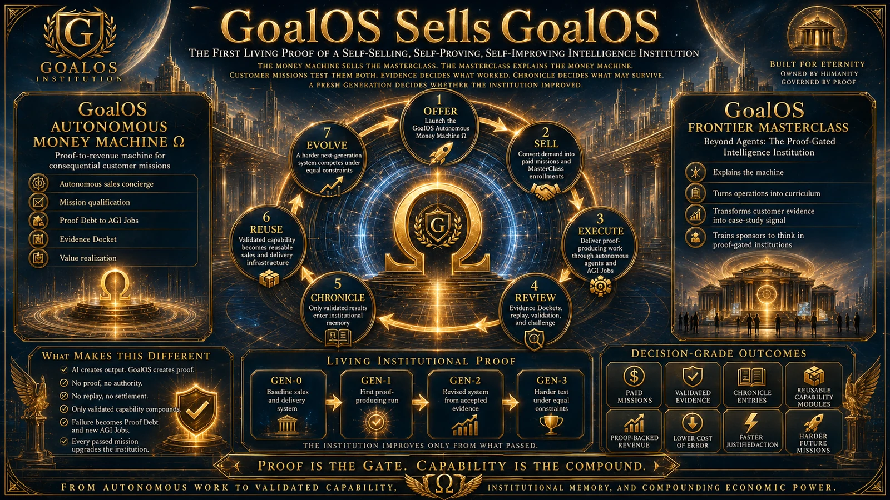

01
Attirer
Publier une catégorie unique et une voie claire pour la demande conséquente.
GoalOS · Distribution directe
La demande devient preuve. La preuve devient institution récurrente.
GoalOS Attracts est la couche de distribution et de conversion de la machine économique GoalOS. Elle demeure désactivée par défaut pour les effets externes et ne peut jamais réécrire le parent, les modalités, les limites d’autorité ni la frontière d’acceptation.
01
Publier une catégorie unique et une voie claire pour la demande conséquente.
02
N’engager que la demande permise selon une base vérifiable.
03
Clarifier l’objectif, la conséquence, l’autorité, les systèmes et les contraintes.
04
Aider le principal à comprendre la catégorie, la preuve et la frontière décisionnelle.
05
N’admettre qu’une véritable organisation, un acheteur responsable et un cas borné.
06
Compiler une offre activée à partir d’un catalogue fermé et de modalités exactes.
07
Figer la portée, l’autorité, la preuve, l’acceptation et les droits.
08
Confirmer la contrepartie perçue par des rails approuvés.
09
Allouer la capacité rare seulement après contrat et paiement.
10
Accomplir le travail borné dans l’Enveloppe d’autorité.
11
Assembler le Dossier de preuve et la contestation indépendante.
12
Convertir la preuve acceptée en Bureau GoalOS récurrent.
13
Ajouter flux de travail, juridictions et institutions propres à des projets.
14
Cumuler le profit vérifié dans la capacité, la distribution et la prochaine Maison.
GoalOS vend GoalOS · Proof Run 001
La machine commerciale autonome vend GoalOS et la MasterClass Frontière. Les missions client testent les deux. La preuve décide ce qui a fonctionné. Chronicle décide ce qui peut survivre. Une génération nouvelle détermine si l’institution s’est réellement améliorée.
Aucune demande synthétique. Aucun témoignage inventé. Aucun résultat garanti. Aucune auto-certification. Si la machine fonctionne, le Dossier de preuve doit le montrer. Si elle échoue, il doit expliquer pourquoi.

Constitution commerciale
Communication entrante, consentie ou autrement autorisée seulement.
Catalogue activé, prix exacts, modalités versionnées et aucun écart discrétionnaire.
Autorisation avant effet, reçu authentifié après effet, puis rapprochement.
Exécution, validation, décision client et admission Chronicle demeurent des décisions séparées.